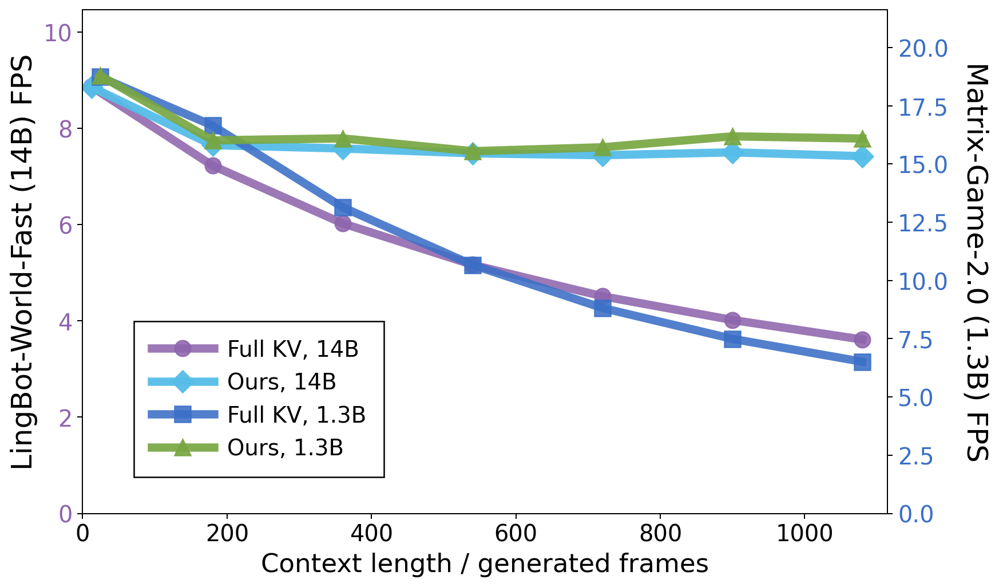
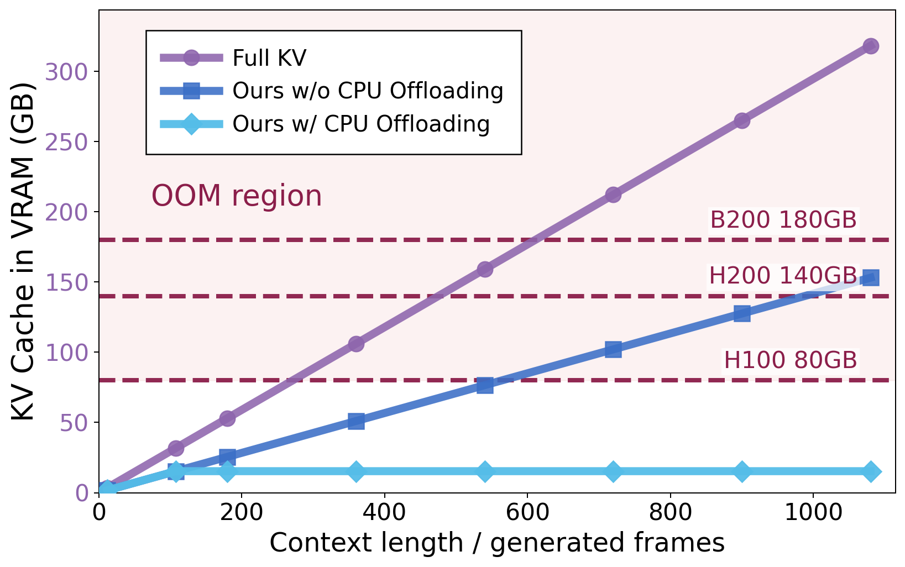
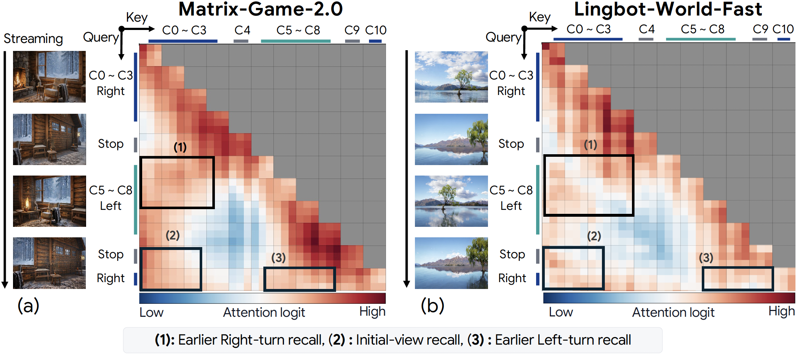
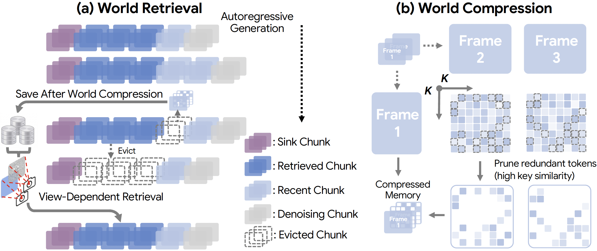

WorldKV is a training-free framework that enables efficient world memory in autoregressive video world models by combining World Retrieval and World Compression.
WorldKV matches and in some cases exceeds full KV-cache memory fidelity at roughly 2× the throughput under almost half the KV cache VRAM/RAM footprint on Matrix-Game 2.0 and LingBot-World-Fast.
Introduction
Emergent Memory
The KV cache of autoregressive video world models is not merely a computational buffer — even models trained only on short clips can leverage the full KV history as an emergent long-term visual memory, faithfully reproducing previously seen viewpoints upon revisit.
Motivation
VRAM & Attention Cost Efficiency
Full KV-cache attention preserves long-term memory, but its VRAM footprint quickly exceeds GPU capacity and the dramatically growing attention cost degrades inference speed below real-time. Efficient world memory requires retaining only the chunks that matter for revisits.


Attention Analysis
Our analysis reveals attention concentrates on past KV chunks whose viewpoints overlap with the current frame, motivating camera/action-indexed retrieval of the top-k viewpoint-relevant chunks back into the active attention window.

WorldKV

World Retrieval stores evicted KV-cache chunks in GPU/CPU memory indexed by camera/action state, and selectively retrieves the top-k viewpoint-relevant chunks back into the active attention window at revisit time, with no re-encoding required.
World Compression, which designates the first frame of each chunk as an anchor and prunes tokens by key-key cosine similarity, retains only the low-similarity distinctive tokens that encode newly revealed regions and temporally changing content while halving per-chunk storage.
Qualitative Results
Qualitative results demonstrating the capabilities of WorldKV.
WorldKV on diverse scenes
Comparison with baselines
Qualitative comparisons of WorldKV against Full KV and other baselines on same prompts.
Cases when WorldKV outperforms Full KV
In Lingbot-World-Fast, WorldKV sometimes recalls revisited scenes more consistently than full KV-cache attention, likely because restricting attention to viewpoint-relevant chunks avoids the attention dilution caused by attending over many viewpoint-irrelevant caches in the Full KV.
On Inspatio-World
Our methods can also be applied to Inspatio-World. World Retrieval and World Compression effectively mitigate memory drift in Inspatio-World.
Conclusion
In this work, we propose WorldKV, a training-free framework that enables long-term world memory in autoregressive video world models through World Retrieval and World Compression. Experiments show memory fidelity competitive with full KV-cache attention and memory-trained baselines, while preserving real-time inference.
Citation
If you use this work or find it helpful, please consider citing: